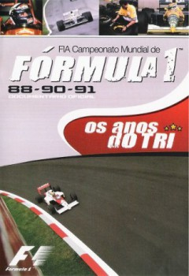

Os Anos do Tri (2004)


Also known as:Os Anos do Tri
Country:United Kingdom, 120 minutes
Spoken languages:Portuguese
Genres:Documentary, Sport
Director(s):
Writer(s):
Video Codec:Unknown
Number: 218
Tomatometer:

--

--
IMDb Rating:

Certification:
Storyline:
Documentary produced by FIA over the years in which Ayrton Senna won his three world championships in Formula 1 and its main rivals of the time.
Cast:
Nigel Mansell (as Self (archive footage)), Nelson Piquet (as Self (archive footage)), Alain Prost (as Self (archive footage)), Ayrton Senna (as Self (archive footage))
Medium: Digital Copy,
Location: SM3-2
Loaned: No
Aspect ratio: Unknown